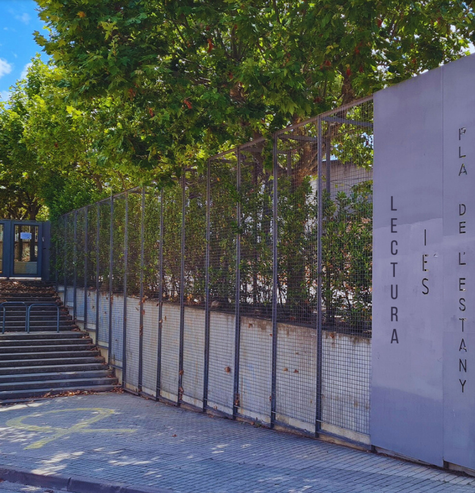
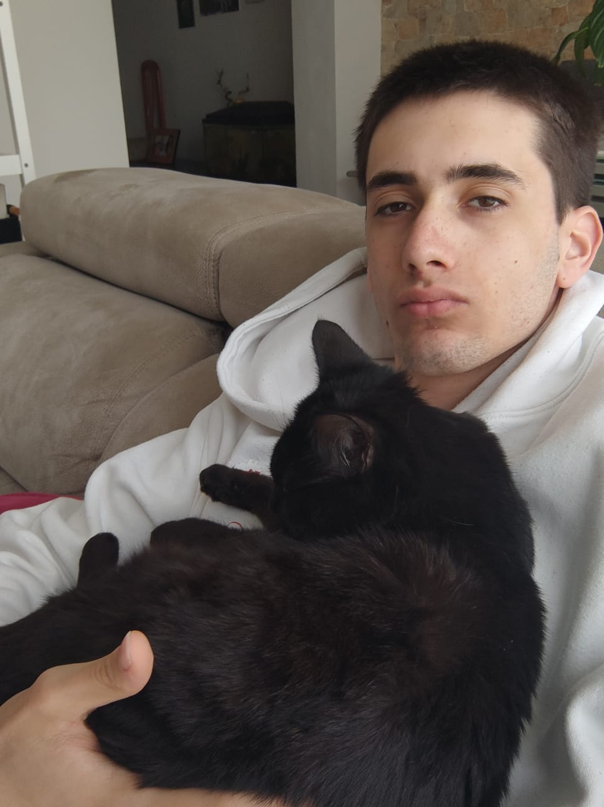
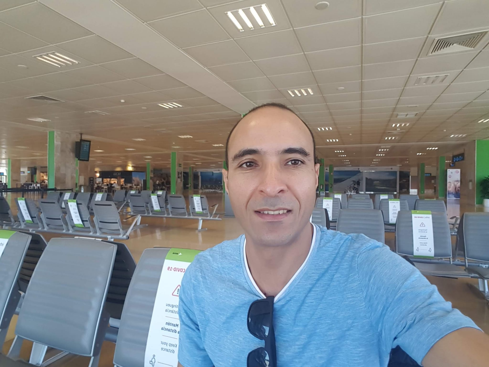
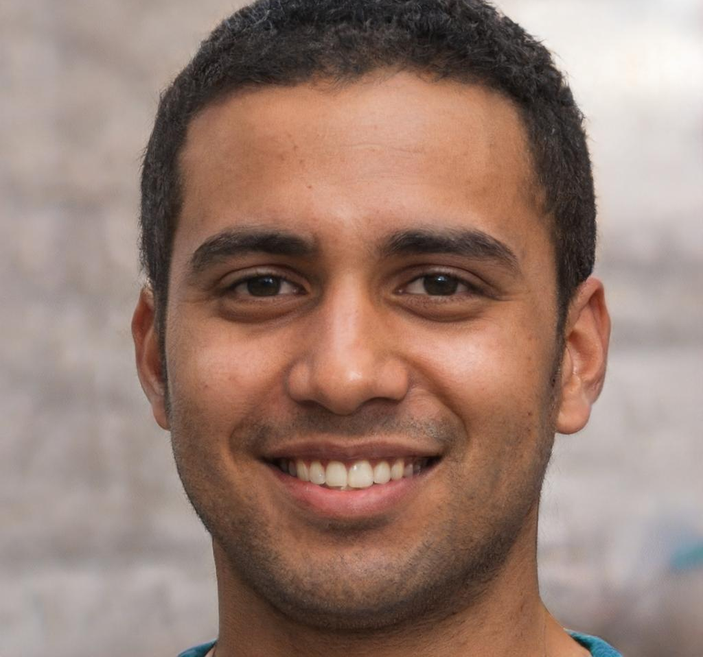
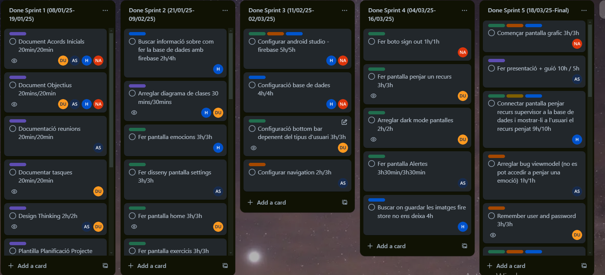

Conoce a las personas detrás de MindSpeak
Somos alumnos del Ciclo Formativo de Grado Superior de Desarrollo de Aplicaciones Multiplataforma y, gracias a esta formación, hemos descubierto que la programación y las bases de datos son campos que nos apasionan.
Además, tenemos un gran interés en poner nuestros conocimientos y habilidades al servicio de los demás, ayudando al máximo de personas posible. Con este objetivo en mente, decidimos diseñar y desarrollar una aplicación que pudiera ser útil y práctica.
Para llevar a cabo este proyecto, aprovechamos nuestras diversas capacidades y nos organizamos de manera que cada uno pudiera contribuir en diferentes áreas, asignándonos roles específicos según nuestras fortalezas. Así, entre todos, hemos podido trabajar de manera colaborativa para hacer realidad esta idea.

Conoce a los desarrolladores que han hecho posible MindSpeak

Project Manager
Program Manager
Project Manager & Program Manager
Con formación en Desarrollo de Aplicaciones Multiplataforma, Damià combina sus habilidades técnicas con una visión estratégica del proyecto. Ha liderado la planificación y coordinación de MindSpeak, asegurando que cada componente se integrara perfectamente.

Database Manager

Design Manager
Design Manager
Como responsable de diseño, Nizar ha creado una interfaz intuitiva y accesible que responde a las necesidades específicas de los usuarios con TEA. Su enfoque centrado en el usuario ha sido clave para el desarrollo del proyecto.
Commercial
Documentation Manager
Commercial & Documentation Manager
Alex se ha encargado de la documentación técnica y comercial del proyecto, así como de desarrollar el modelo de negocio y la estrategia de comercialización. Su visión comercial ha ayudado a definir el posicionamiento de MindSpeak en el mercado.
La distribución de tareas que hizo posible MindSpeak
| Miembro | Rol | Responsabilidades | Dedicación |
|---|---|---|---|
| Damià Vidal Uribe | Project Manager Program Manager |
|
42 horas |
| Hicham Oukassou | Database Manager |
|
39 horas |
| Nizar Ahannach Ahannach | Design Manager |
|
38 horas |
| Alex Martinez Sicilia | Commercial Documentation Manager |
|
37 horas |
Cómo hemos trabajado para desarrollar MindSpeak
Para el desarrollo de este proyecto, hemos utilizado la metodología SCRUM, que nos ha permitido trabajar de manera ágil y colaborativa. Esta metodología se ha basado en:
Esta combinación de reuniones y el uso de herramientas como Trello y GitHub ha ayudado a mantener el trabajo bien organizado, transparente y con una comunicación fluida entre todos los miembros del equipo.

Captura de nuestro tablero Trello con las tareas distribuidas
Profesores que han guiado nuestro proyecto
Tutor Metodológico
Docente, Tutor, Jefe del Departamento de Informática y Coordinador de Calidad en el Instituto Pla de l'Estany. Su apoyo ha sido clave para la organización del trabajo y la planificación del desarrollo.
Tutor Técnico
Profesor especializado en desarrollo de aplicaciones móviles y arquitectura de software. Su orientación ha sido fundamental en los aspectos técnicos del proyecto.
Qué hemos aprendido durante el desarrollo de MindSpeak
Hemos aprendido la importancia de una buena organización y comunicación en un equipo de desarrollo. La asignación de roles específicos ha permitido aprovechar las fortalezas de cada miembro, optimizando así el proceso de trabajo.
El proyecto nos ha enseñado a diseñar pensando en la accesibilidad y la facilidad de uso, asegurándonos de que la aplicación sea realmente útil y funcional para los usuarios con TEA. Hemos tenido en cuenta aspectos como colores, tamaño de texto y simplicidad visual.
Hemos aprendido a adaptarnos a los imprevistos y a buscar soluciones creativas ante desafíos técnicos, como la necesidad de utilizar dos bases de datos diferentes para resolver limitaciones con el almacenamiento de imágenes.
Este proyecto nos ha demostrado que, con esfuerzo y colaboración, podemos crear herramientas tecnológicas que tengan un impacto positivo en la sociedad, especialmente para colectivos con necesidades específicas.
Estamos buscando colaboradores y profesionales para ayudarnos a mejorar y expandir el proyecto.